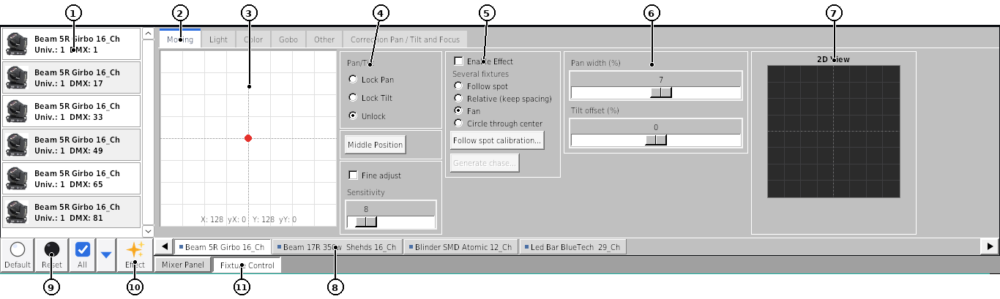
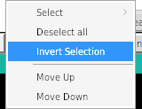
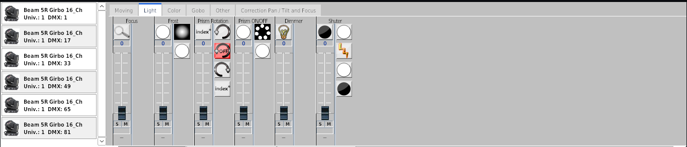
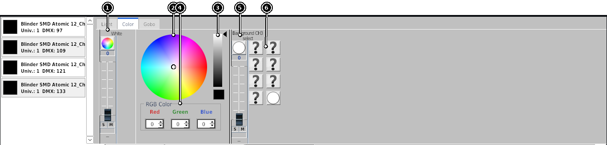

For: FullPlayer
Fixture Control sets the fixtures by hand, by what their channels do: move a head with the mouse, pick a colour or a gobo by its picture, open the dimmer. It is the quickest way to set a position or a look while you build a chase, or to check a fixture. Press Fixtures in the function bar: it opens under the Live panel; the tabs Mixer Panel and Fixture Control at the bottom switch between it and the General Mixer.
What you set here goes to the output only for the fixtures ticked, and only what you touch: a fixture keeps every other channel as the buttons left it.

Andrei_edit: the six Beam 5R Girbo, none ticked yet.
| 1 | The fixtures of the type chosen (8), with their picture, universe and address. A click ticks or unticks one (the ticked ones are lit); Ctrl+click ticks only that one. |
| 2 | The tabs of what the type can do: Moving, Light, Color, Gobo, Other (only those the type has), and Correction Pan / Tilt and Focus (see its page). |
| 3 | The Pan / Tilt pad: drag the red dot and the ticked heads follow. Under it: the values - X and Y (Pan and Tilt), yX and yY (their fine channels). While you drag, the mouse pointer is hidden; when you let go it stands on the dot. |
| 4 | Lock Pan / Lock Tilt / Unlock - only up-down or only left-right. Middle Position - Pan and Tilt to the middle. Fine adjust - small, exact moves; Sensitivity (1 to 64) - how far the head goes for a move of the mouse. |
| 5 | Enable Effect - several fixtures move together, in one of four ways (see below). Follow spot calibration... and Generate chase... belong to it. |
| 6 | Pan width / Tilt offset - for Fan: how far apart the first and the last one are. |
| 7 | 2D View - where each ticked fixture points now, in its colour, with a short trail. Double-click: the same, big, in its own window. |
| 8 | The fixture types of the project. Each type remembers its own ticks. |
| 9 | The icons Default, Reset, All and the arrow of the selection menu (see below). They stand under the list, two rows high; dragging the line between the list and the panel makes them wider or narrower with the list. |
| 10 | Effect - the Effect Generator for the fixtures ticked. |
| 11 | Mixer Panel / Fixture Control - the General Mixer or this panel. |
Each icon has its name under it; the mouse over one shows what it does.
| Icon | What it does |
|---|---|
| Default (white ball) | The default values of the profile for the ticked fixtures (the presets marked "default"); a light channel without presets goes to full. |
| Reset (black ball) | Every channel of the ticked fixtures to 0. |
| All (blue square with a tick) | Ticks every fixture of the type open. |
| The blue arrow | The selection menu (below). |

| Item | What it does |
|---|---|
| Select > All / each 2th / each 3th / each 4th | All, or one of every 2, 3 or 4 (2, 4, 6 ... / 1, 4, 7 ... / 1, 5, 9 ...); the others are unticked. |
| Deselect all | Unticks every fixture of the type. |
| Invert Selection | Ticked become unticked and the other way round. |
| Move Up / Move Down | Every tick one row up or down (the first goes to the last). Press it again and again for a chase by hand along the row. |
These touch only the type open; the other types keep their ticks.

One column for each channel: its name at the top, the value, the fader (drag it or click its track), S and M as in the General Mixer, and next to it the pictures of its presets, taken from the profile. Click a picture: the channel goes to that preset (the open gobo, the white, the strobe ...). A ? is a preset that has no picture in the profile. The picture in front of each fixture in the list shows the last preset picked.

| 1 | An ordinary channel of the tab (here White). |
| 2 | The colour wheel, for the Red, Green and Blue channels together: click or drag in it. |
| 3 | The brightness of that colour: full at the top. |
| 4 | RGB Color - the exact values of Red, Green, Blue (0 to 255). |
| 5 | The next channel, with its presets. |
| 6 | A preset with no picture in the profile. |
Tick the fixtures, tick Enable Effect and choose how they follow the pad. They are arranged at once, then follow it. Opening another type switches the effect off; the fixtures stay where they are.
| Mode | What the heads do |
|---|---|
| Follow spot | They all light the same point of the floor, the one the pad points at. It needs the calibration (below). |
| Relative (keep spacing) | The pad is the middle of the group; each keeps its distance from it, as it was when you started. The group stops at an edge. |
| Fan | The pad is the middle; the first and the last are Pan width / Tilt offset apart (-100 to 100 %), the others evenly between them. |
| Circle through center | They stand evenly on a circle round a point of the floor and turn, each beam passing through the centre. It needs the calibration. |
Follow spot calibration... - two ways, the last one saved counts:
The calibration is kept in the S2L.dat of the project. Generate chase... makes the same movement as a light sequence in the Library, to put on a button. Its steps have Pan / Tilt only - the fine channels (Pan Fine, Tilt Fine, uPan ...) are 0, as in every generated move: while the steps fade the program makes the fine value itself, so the movement is smooth (see Effect Generator).